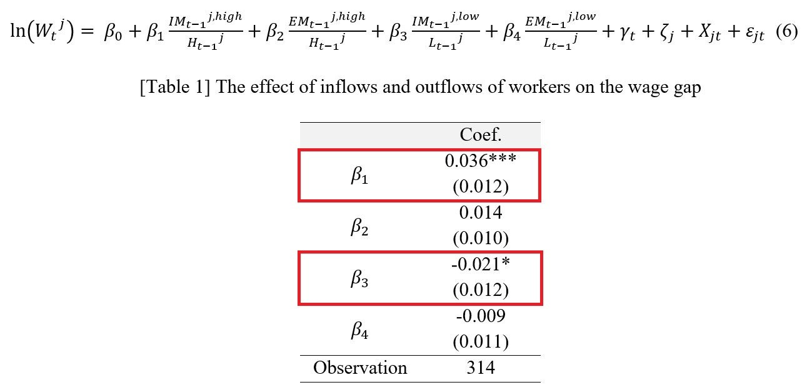
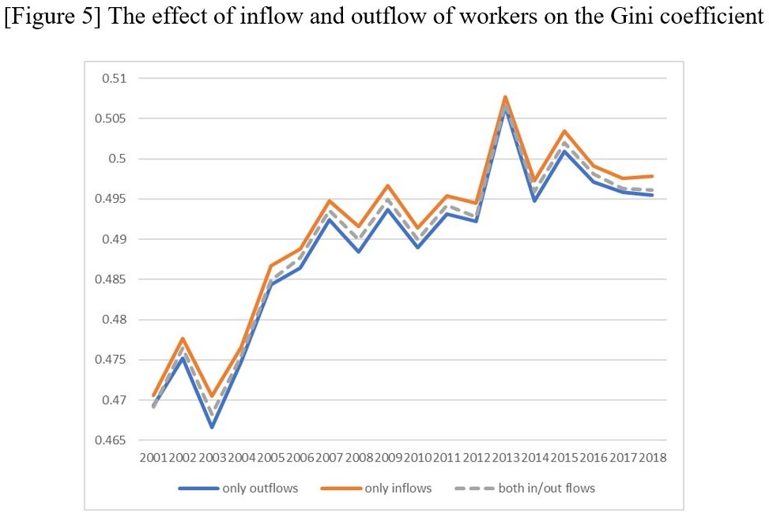
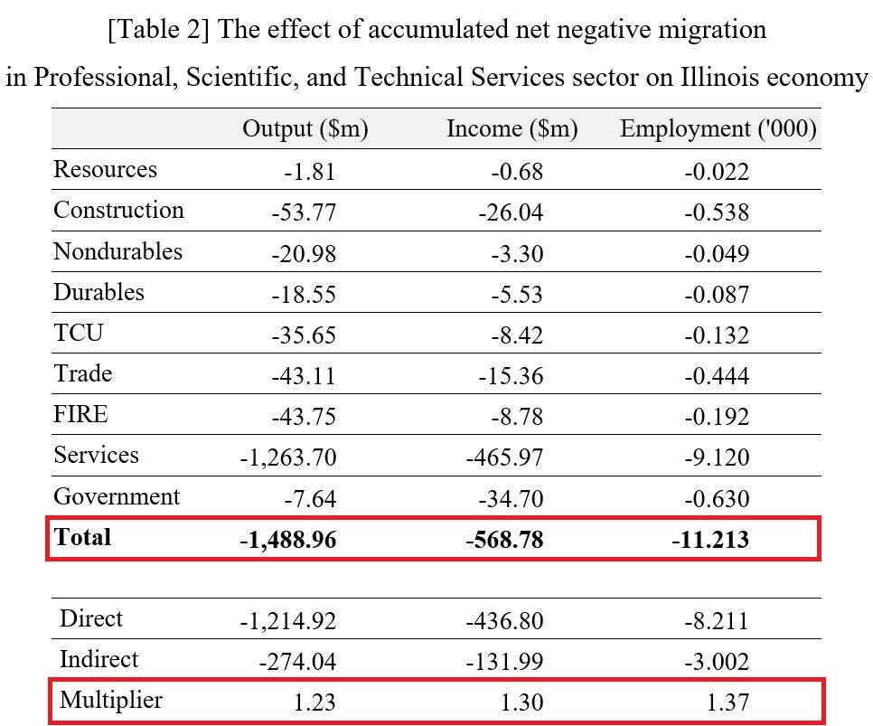
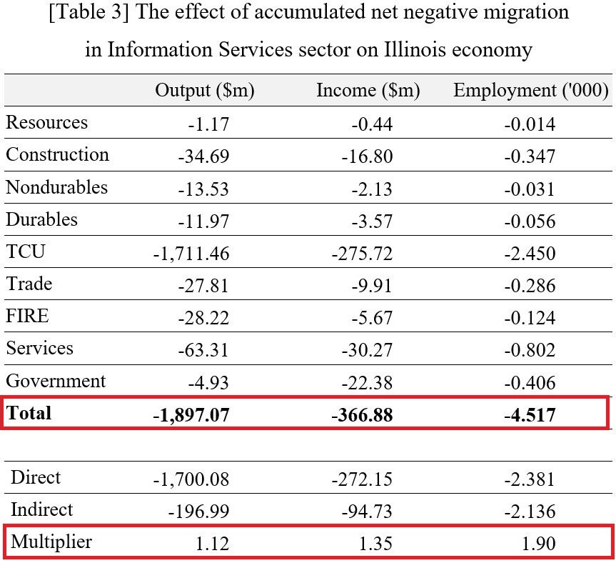
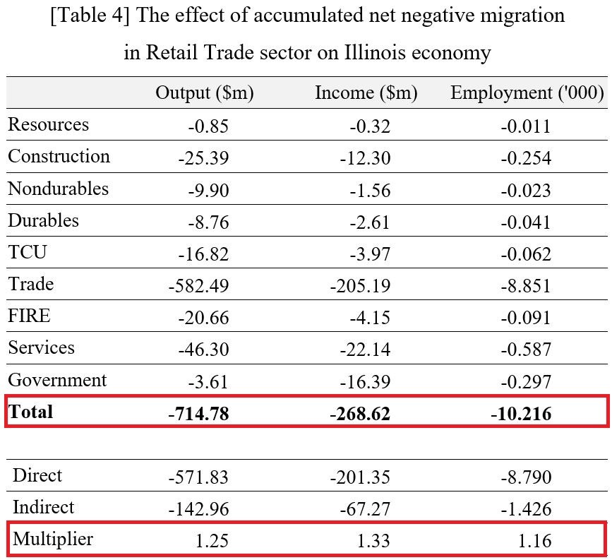

Negative net migration and the local economy (with Geoffrey J.D. Hewings)





Summary
As the inflow of high-educated workers increases or the inflow of low-educated workers decreases, the relative wages of highly educated workers rise by 3.6% and 2.1%, respectively. The effect of worker outflow on wage differentials remains uncertain, making the impact of net inflow of highly educated workers on their relative wages unclear.
Further analysis reveals that income inequality in Illinois has declined due to a net outflow of high-educated workers. However, it is evident that the general net outflow of workers negatively affected the local economy. Specifically, this net outflow likely to led to further reductions in local output and income, attributable to multiplier effects of up to 1.35.
JEL
D63, R15, R23